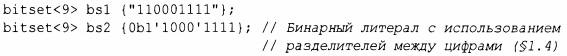
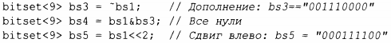
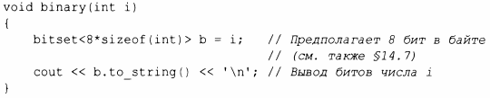
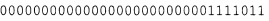
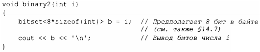

⇐13.4.1 array 13.4.3 pair и tuple⇒
Такие аспекты системы, как состояние входного потока, часто представляются в виде набора флагов, соответствующих бинарным условиям (таким, как "хорошо/плохо", "истина/ложь" и "включено/выключено"). С++ эффективно поддерживает концепцию небольших наборов флагов с помощью побитовых операций над целыми числами(§ 1.4). Класс Ьitset<N> обобщает это понятие, предоставляя операции над последовательностью из N битов [O;N], где значение N известно во время компиляции. Для наборов битов, которые не вписываются в long long int, использование Ьi tset гораздо удобнее, чем непосредственное использование целых чисел. Для небольших множеств Ьitset обычно оптимизирован. Если вы хотите именовать биты, а не нумеровать их, можете использовать set (§11.4) или перечисление (§2.5).
bitset может быть инициализирован целым числом или строкой:
К bitset можно применять обычные побитовые операторы (§ 1.4), а также операторы сдвига влево и вправо (<<и>>):
Операторы сдвига (здесь-<<) "вдвигают" в число нулевые биты.
Операции to_ullong() и to_string() предоставляют обратные конструкторам операции. Например, вот как мы можем выписать бинарное представление значения типа int:
Этот код выводит биты, представленные как 1 и 0, слева направо, с самым старшим значащим битом слева, так что для аргумента 123 будет выведено
Для этого примера проще использовать оператор вывода bitset непосредственно:
